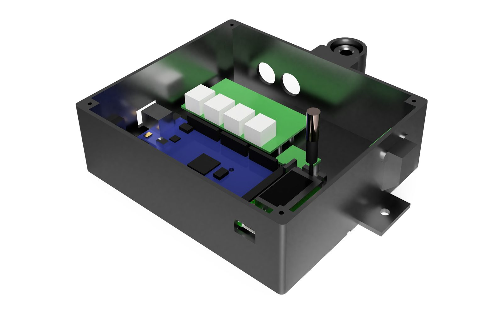

Launch-site weather station
A weather station UQ Space sets up at the launch site, so the pre-flight apogee prediction can use wind and pressure measured on site. I wrote its first design and rewrote most of its firmware. At the 2026 Australian Universities Rocket Competition it logged about 7 hours over 2 days, and all 98,218 checksummed rows on its card, bench tests included, passed.
- My role
- Lead avionics engineer. Wrote the first design and parts list, rewrote most of the firmware and sourced the parts. Wrote 30 of the repository's 39 commits. A teammate built the prototype
- Team
- UQ Space avionics team
- When
- Jun – Oct 2026
- Tools
- Arduino Mega, Heltec LoRa (915 MHz), BME280, C++, Fusion 360
- Code
- Private: UQ Space team repositories

The problem
The team's pre-flight apogee prediction needs the wind and pressure at the launch site on the day.
What I did
- An Arduino Mega reads a wind and rain kit and a BME280, and writes every sample to SD first.
- A Heltec LoRa board relays about every second row on 915 MHz to a second board at the ground station.
- My firmware rewrite appends to the log, keeps sampling and transmitting when the SD card or a sensor drops out, and puts a 16-bit cyclic redundancy check (CRC-16) and a sequence number on every row.
- I built the station's 3D-printed enclosure, which housed it at the 2026 Australian Universities Rocket Competition.
Specifications
| Controller | Arduino Mega 2560 |
|---|---|
| Sensors | DFRobot SEN0186 wind and rain kit, BME280 |
| Radio | Heltec WiFi LoRa 32 V3, 915 MHz |
| Logging | microSD at 1 Hz; CRC-16 and sequence number on every row |
| Power | USB power bank, 10 to 20 Ah |
| Enclosure | 3D printed; the Fusion design specifies ASA |
Result
The station logged at 1 Hz, and its pressure and wind went into our last pre-launch prediction.
What went wrong
The prototype deleted its log on every boot, and a loose SD card or sensor wire stopped the radio as well. Fixing those two faults set the priorities for the rewrite.
Credits
A teammate built the prototype. The station is a UQ Space avionics team project.